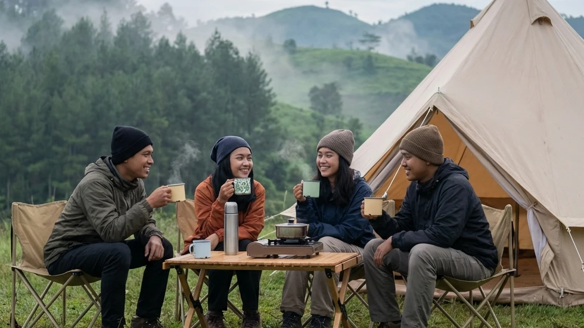

Kehidupan modern seringkali menjebak kita dalam rutinitas yang monoton dan penuh tekanan. Kemacetan, polusi, dan bisingnya kota besar membuat banyak orang mencari pelarian yang bisa menenangkan jiwa. Tidak heran jika belakangan ini, tren liburan kembali ke alam (*back to nature*) mengalami lonjakan peminat yang amat drastis. Namun, tidak semua orang siap menghadapi kerasnya medan pegunungan atau repotnya membangun tenda sendiri. Untuk menjembatani keinginan menikmati alam tanpa harus mengorbankan kenyamanan, lahirlah sebuah tren revolusioner yang dikenal luas sebagai Glamping.
Jika Anda sedang melakukan pencarian mengenai Rekomendasi Glamping Terbaik: Sensasi Menginap Mewah di Tengah Syahdunya Alam Terbuka, maka Anda telah berada di halaman panduan yang teramat tepat. Artikel komprehensif ini akan menguliti secara mendalam apa sebenarnya esensi dari glamping, mengapa ia jauh lebih superior dibandingkan kemah tradisional bagi sebagian orang, serta membeberkan rekomendasi destinasi terbaik di kawasan dataran tinggi Batu Malang yang dijamin akan menyempurnakan akhir pekan liburan Anda bersama keluarga atau pasangan tercinta.
1. Apa Itu Glamping dan Mengapa Semakin Populer?
Bagi sebagian kalangan, kata glamping mungkin masih terdengar asing. Mari kita bedah secara tuntas mengapa gaya liburan ini bisa menjadi sebuah fenomena global yang masif.
Evolusi dari Camping Konvensional
Glamping adalah sebuah akronim yang menggabungkan dua kata bahasa Inggris, yakni Glamorous (mewah/glamor) dan Camping (berkemah). Jika pada kemah konvensional Anda dituntut untuk memiliki kemampuan survival, memasak menggunakan kayu bakar, dan tidur beralaskan tanah dengan suhu yang ekstrem, glamping mengubah semua aturan tersebut. Glamping adalah bentuk modernisasi di mana tenda-tenda dirancang sedemikian rupa menggunakan material kelas satu, diletakkan di lokasi yang paling indah, dan disuntikkan dengan berbagai perabotan modern yang memanjakan tubuh.
Menawarkan Solusi "Anti-Ribet"
Kepopuleran glamping meroket tajam karena ia sukses memberikan solusi "Anti-Ribet" bagi masyarakat urban. Para tamu yang datang tidak lagi diminta memanggul tas ransel (*carrier*) seberat puluhan kilogram. Saat Anda tiba di lokasi, tenda raksasa sudah berdiri tegak. Anda tidak perlu memompa kasur atau mencari titik colokan listrik. Semua kelelahan logistik telah diambil alih dan diurus sepenuhnya oleh pihak pengelola. Anda benar-benar hanya membeli "waktu" untuk bersantai sepenuhnya.
BACA JUGA (Opsi Liburan Nyaman):
2. Daya Tarik Menginap di Glamping Alam Terbuka
Meskipun glamping juga bisa ditemukan di daerah pantai, namun sensasi glamping di kawasan pegunungan atau dataran tinggi memberikan nuansa magis (healing) yang jauh lebih superior.
Udara Sejuk dan Pemandangan Asri
Dataran tinggi, seperti kawasan Kota Batu di Jawa Timur, menawarkan kualitas udara yang amat bersih, terbebas dari paparan debu dan polusi emisi karbon. Kesejukan udara pegunungan ini akan secara otomatis merelaksasi sistem saraf Anda. Selain itu, tenda glamping umumnya didirikan di area tebing berkonsep terasering, yang menyuguhkan pemandangan (view) lembah hijau yang luar biasa luas dan menyejukkan mata tanpa ada bangunan gedung yang menghalanginya.
Fasilitas Layaknya Hotel Berbintang
Inilah letak kemewahan sesungguhnya. Di dalam sebuah tenda glamping, Anda biasanya akan disambut oleh keberadaan kasur pegas (springbed) berukuran Queen atau King size, selimut bed cover yang tebal, dan aliran listrik yang memadai. Pada glamping kelas premium, Anda bahkan bisa menemukan kamar mandi pribadi (en-suite bathroom) di dalam tenda yang dilengkapi dengan kloset duduk modern serta fasilitas pemanas air (water heater). Sebuah kemewahan yang dulu dianggap mustahil hadir di tengah hutan.

Berkat inovasi dari pengelola pariwisata modern, kini tersedia pilihan Comfort Camping yang mengadaptasi kenyamanan ala glamping namun dengan harga yang jauh lebih ramah di kantong. (Dokumentasi: Batu Sunrise Camp)3. Rekomendasi Glamping Terbaik di Dataran Tinggi Batu
Jika Anda mencari lokasi yang dapat merepresentasikan secara utuh makna dari Rekomendasi Glamping Terbaik: Sensasi Menginap Mewah di Tengah Syahdunya Alam Terbuka, maka Anda wajib menengok pesona wisata di kawasan Kota Apel, Batu Malang.
Batu Sunrise Camp: Pilihan Cerdas dan Ramah Kantong
Sebagian besar glamping premium mematok tarif yang teramat mahal, bahkan kerap melampaui harga kamar hotel bintang empat. Namun, ada sebuah solusi brilian (jalan tengah) yang dikenal sebagai Comfort Camping yang saat ini dipelopori oleh Batu Sunrise Camp. Tempat ini mengadaptasi secara cerdas seluruh kemudahan ala glamping, namun dengan harga sewa yang jauh lebih ekonomis dan logis bagi kantong keluarga.
Di Batu Sunrise Camp, Anda akan menyewa Paket All-In. Tenda berspesifikasi gunung (double layer tebal anti badai) yang berukuran amat besar telah disediakan dan didirikan dengan sangat kokoh. Kasur spons ekstra tebal dan sleeping bag (kantong tidur) polar yang wangi sudah menanti Anda di dalam tenda. Untuk menyamai standar kebersihan glamping, pihak pengelola merawat blok toilet duduk yang sangat higienis dan terang, serta memfasilitasi setiap area tenda dengan tiang colokan listrik yang aman dari hujan.
Menikmati Golden Sunrise dan City Light
Kemewahan tak berbayar dari lokasi ini adalah orientasi lahannya. Anda bisa memarkir mobil tepat di sebelah tenda (*campervan friendly*). Dari teras tenda Anda yang menghadap langsung ke arah timur, Anda akan disuguhi pemandangan ribuan lampu kota (City Light) Malang Raya yang berkedip syahdu di malam hari. Keesokan paginya, Anda cukup membuka ritsleting tenda untuk menjadi saksi mata langsung bagaimana mahakarya matahari terbit (Golden Sunrise) perlahan memecah lautan awan pegunungan.
4. Persiapan Sebelum Berangkat Glamping
Meskipun semua infrastruktur berat telah ditangani oleh pengelola wisata, Anda tetap harus menyiapkan perlengkapan pribadi agar liburan Anda berjalan dengan amat sempurna.
Pakaian Hangat dan Perlengkapan Pribadi
Dataran tinggi Batu bisa memiliki suhu yang merosot tajam hingga 14 derajat Celcius di malam hari. Pastikan Anda menerapkan sistem pakaian berlapis (layering). Bawalah jaket fleece penghangat badan dan jaket windbreaker tahan angin. Jangan lupakan penutup kepala (beanie/kupluk) dan kaus kaki tebal. Bawalah juga obat-obatan pribadi, kamera untuk mengabadikan pemandangan estetik, serta sebuah kabel rol listrik (extension cord) agar Anda bisa men-charge ponsel dengan santai di dalam tenda.
5. Kesimpulan
Menghadiahi diri sendiri (self-reward) setelah lelah bekerja sebulan penuh adalah hal yang sangat berhak Anda dapatkan. Memilih opsi Rekomendasi Glamping Terbaik: Sensasi Menginap Mewah di Tengah Syahdunya Alam Terbuka adalah sebuah langkah taktis untuk merestorasi kembali kewarasan dan energi positif Anda. Baik Anda memilih glamping yang super mewah, maupun memilih opsi cerdas Comfort Camping berharga ekonomis layaknya di Batu Sunrise Camp, tujuannya tetaplah satu: menepi ke alam tanpa harus menderita. Segeralah tentukan tanggal liburan Anda, hubungi layanan reservasi untuk mengamankan tenda dengan pemandangan terbaik, dan biarkan keindahan alam Kota Batu menyembuhkan segala kepenatan di dada Anda.